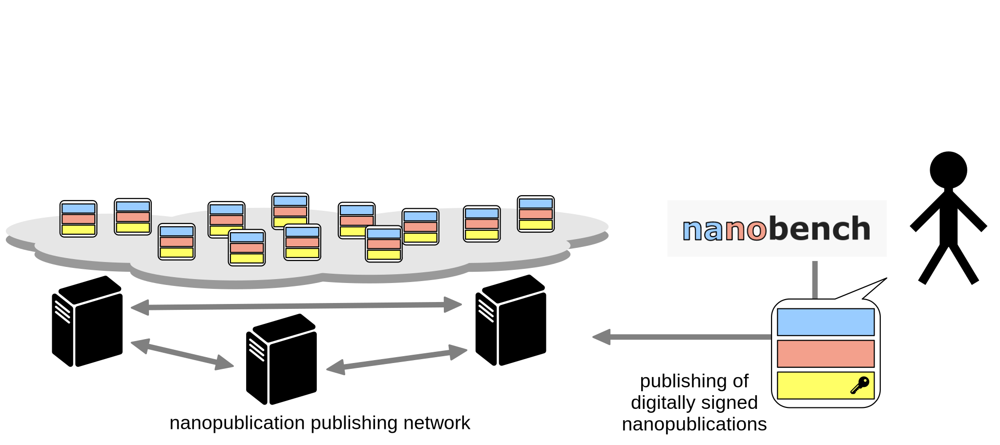
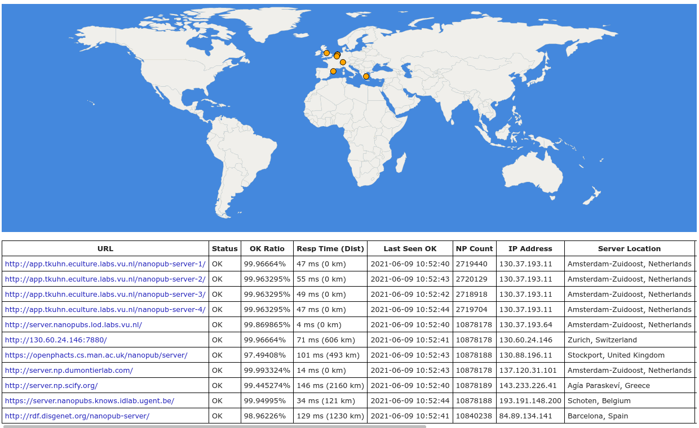
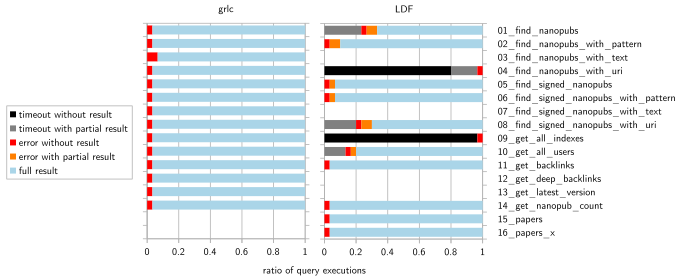

Semantic micro-contributions with decentralized nanopublication services
Tobias Kuhn
VU Amsterdam
http://www.tkuhn.org
WAI Seminar at VU Amsterdam, 7 June 2021
Kuhn T, Taelman R, Emonet V, Antonatos H, Soiland-Reyes S, Dumontier M. 2021. Semantic micro-contributions with decentralized nanopublication services. PeerJ Computer Science 7:e387 https://doi.org/10.7717/peerj-cs.387
Motivation: Easy and Quick Publishing Small Linked Data Contributions
- Contributions that can also be original or personal
- e.g. new scientific findings or opinions
- they don't fit in resources like WikiData
- A bit like a semantic version of Twitter
- But fully decentralized
Nanopublication

Architecture of Approach

Architecture of Approach
Architecture of Approach

Architecture of Approach

Nanobench
Nanobench
Server Network
Results
Usability Study Results
| better → | |||||||
|---|---|---|---|---|---|---|---|
| SUS questions: | odd questions: | 1 | 2 | 3 | 4 | 5 | |
| even questions: | 5 | 4 | 3 | 2 | 1 | Score | |
| 1: I think that I would like to use this system frequently | 0 | 3 | 9 | 13 | 4 | 65.52 | |
| 2: I found the system unnecessarily complex. | 0 | 0 | 3 | 11 | 15 | 85.34 | |
| 3: I thought the system was easy to use | 0 | 1 | 1 | 13 | 14 | 84.48 | |
| 4: I think that I would need the support of a technical person to be able to use this system | 1 | 2 | 5 | 7 | 14 | 76.72 | |
| 5: I found the various functions in this system were well integrated | 0 | 1 | 7 | 14 | 7 | 73.28 | |
| 6: I thought there was too much inconsistency in this system | 0 | 1 | 2 | 15 | 11 | 81.03 | |
| 7: I would imagine that most people would learn to use this system very quickly | 0 | 3 | 6 | 14 | 6 | 69.83 | |
| 8: I found the system very cumbersome to use. | 0 | 0 | 1 | 17 | 11 | 83.62 | |
| 9: I felt very confident using the system | 0 | 1 | 6 | 15 | 7 | 74.14 | |
| 10: I needed to learn a lot of things before I could get going with this system | 0 | 1 | 4 | 8 | 16 | 83.62 | |
| Total: | 1 | 13 | 44 | 127 | 105 | 77.76 | |